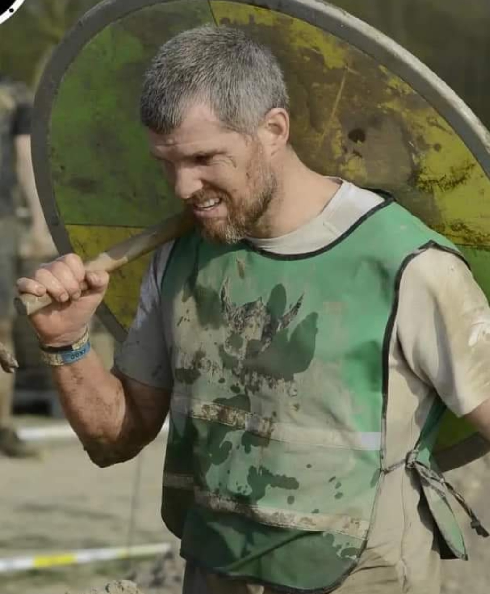

Bob
Obstacle runner
Bob een sportieve man die graag buiten sport. Ik sport al vanaf kleins af aan en de laatste 12 jaar vooral gericht op survival en obstacle running. Van trailrunnen en fietsen naar het werk tot mountenbiken, klimmen in het bos en een rondje hardlopen in de polder. Het maakt niet zoveel uit welke sport als het maar heerlijk in de buitenlucht is.
De laatste jaren heb ik voornamelijk wat meer obstacle runs gelopen en wat minder survival runs. Iets meer het aspect gelegd op plezier in de runs en wat minder op de prestaties. Wel naast het plezier ook de uitdaging om wat extremere obstacle runs te lopen, zoals de iron viking run en de ultimate warrior obstacle run. Dit waren runs van respectievelijk 42 km en 56 km met heel veel hindernissen.
Joost
Obstacle runner

Joost de huis vriend, een ruige viking en zeer sportief. Hij loopt obstacle runs en loopt ook graag een rondje hard. Verder is Joost ook maar wat al te graag te vinden in de fitness ruimte bij de brandweer. Verder is hij graag buiten en wandeld hij graag met zijn vrouw, kids en hond in het bos bij het mooie Limburgse Stramproy.
Als iemand gefascineerd is door de oude vikingen dan is het Joost. Van alle vikings en goden weet hij wel iets af, zelfs een van zijn zoons heet Odyn. Alle vragen met betrekking tot de oudheid kun je aan Joost richten, hij weet het allemaal, zoniet...dan zoekt hij het voor je op.
Mark
Obstacle runner
Dan is er Mark (de benjamin), mijn achterneefje en een fervent obstacle runner, er zijn weinig bekende runs die hij niet gelopen heeft. Samen hebben we denk ik alle runs in ons mooie landje gelopen, niet alleen de obstacle runs maar verschillende survival runs.
Onze eerste iron viking run van 42 kilometer hebben we samen met Nick in België gelopen, een prachtige ervaring. Verder trainen we regelmatig gewoon in onze wijk Rosmalen, slootjes, speeltuintjes, bomen etc, alles wat we tegenkomen kunnen we gebruiken als training voor onze runs.